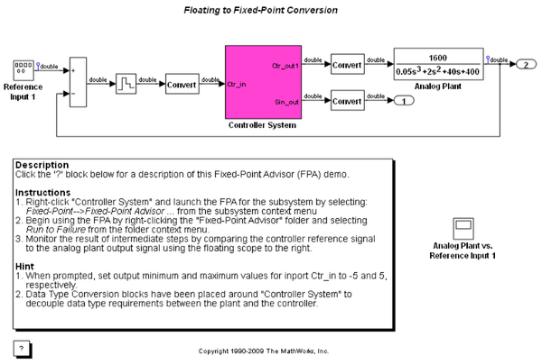
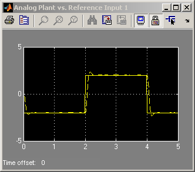

Fixed-Point Advisor
This model highlights key features of the Fixed-Point Advisor (FPA), which complements the Fixed-Point Tool (FPT). The FPA facilitates converting a floating-point model or subsystem to an equivalent fixed-point representation. You can use the FPA to prepare a model for conversion and obtain an initial scaling to use as the starting point for refinement and exploration inside the FPT.
 